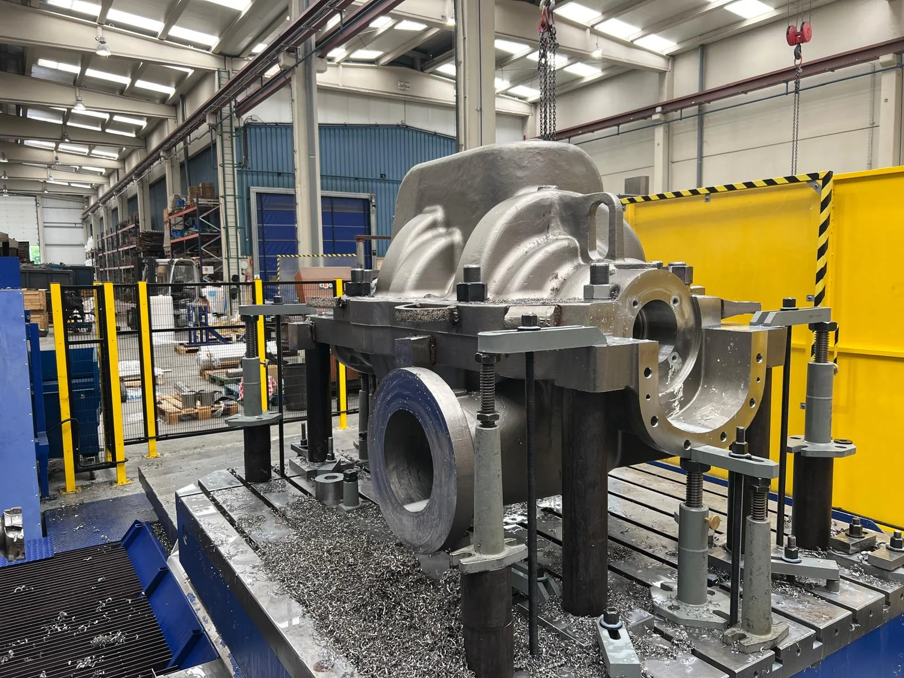
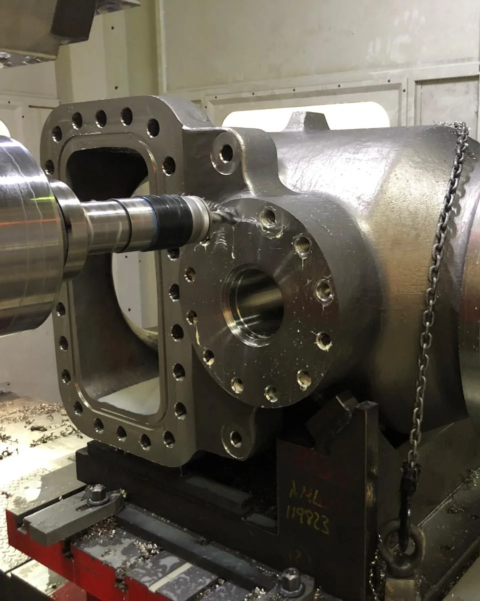
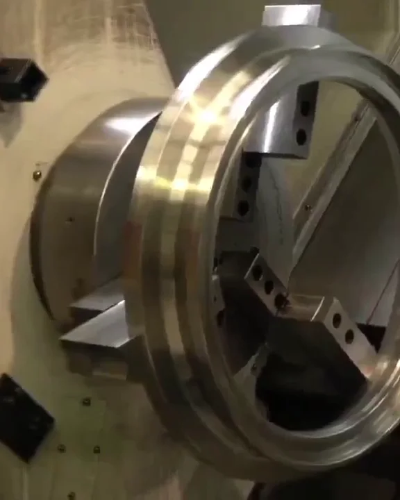
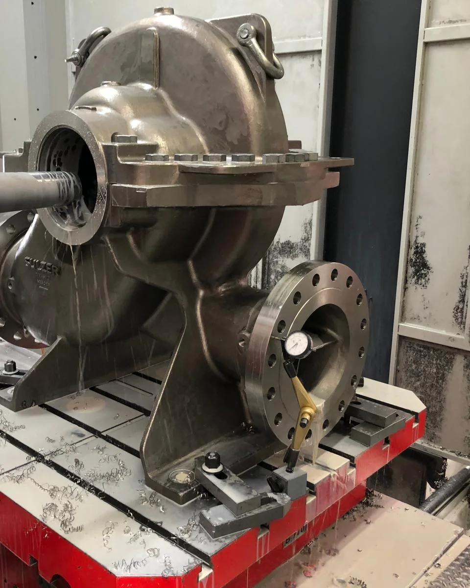
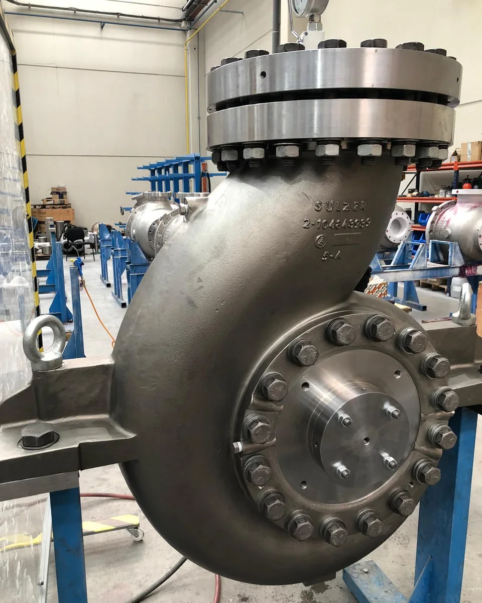
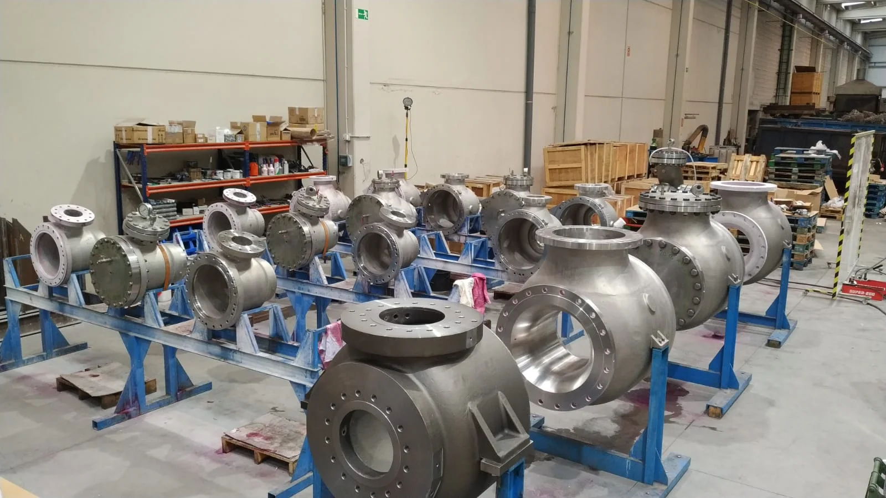

Mecanizado y control de calidad
Piezas de acero fundido mecanizadas, medidas y ensayadas.
Mecanizado CNC bajo plano, control dimensional y ensayos en planta propia, con trazabilidad de cada pieza.
Quiénes somos
Mecanizado, metrología y ensayos en una sola planta.
AML Centrifugal Casting mecaniza piezas de acero fundido a la carta desde 2012, en su planta de Lekunberri (Navarra). La planta trabaja 24 horas en tres turnos.
Fabricación bajo plano, desde una unidad hasta series con entregas programadas. Planos y documentación técnica tratados con confidencialidad. Trazabilidad completa de cada pieza durante todo el proceso.

+15
Años de actividad
24 h
Planta en tres turnos
12.000 kg
Peso máximo de pieza
± 0,005 mm
Tolerancia en 5 ejes
Capacidades
Fresado, torneado, mandrinado y soldadura.
Nueve máquinas CNC y soldadura certificada. Dimensiones, pesos y tolerancias máximas por operación.
Fresado
Centros de mecanizado y 5 ejes. Hasta Ø 2.000 × 1.500 mm y 4.500 kg.
Torneado
Torneado de gran volteo y esférico. Volteo hasta Ø 1.600 mm.
Mandrinado
Mandrinadora de columna móvil. Hasta 12.000 kg sobre mesa giratoria.
Soldadura
Soldadores certificados según UNE-EN ISO 9606-1. Procedimientos RCC-M.
Fresado
Geometrías complejas en centros de mecanizado y 5 ejes.
Caras, ranuras, taladros y geometrías complejas. Tolerancia desde ± 0,005 mm en 5 ejes.
Máquinas de fresado
Trevisan II DS-600 RAM
- Tipo
- Centro de mecanizado
- Dimensiones máx.
- Ø 2.000 × 1.500 mm (Ø 900 mm en torneado)
- Peso máx.
- 2.600 kg (4.500 kg con carga reforzada)
- Tolerancia
- ± 0,010 mm
Trevisan I DS-600
- Tipo
- Centro de mecanizado
- Dimensiones máx.
- Ø 2.000 × 1.100 mm (Ø 900 mm en torneado)
- Peso máx.
- 2.600 kg
- Tolerancia
- ± 0,010 mm
Johnford SV-48H
- Tipo
- Centro de mecanizado vertical
- Dimensiones máx.
- 1.300 × 700 × 630 mm
- Peso máx.
- 1.500 kg
- Tolerancia
- ± 0,015 mm
Deckel Maho DMC 80 U duoBLOCK
- Tipo
- Centro de mecanizado 5 ejes
- Dimensiones máx.
- Ø 900 × 1.450 mm (mesa Ø 800 × 630 mm)
- Peso máx.
- 1.200 a 1.400 kg
- Tolerancia
- ± 0,005 mm

Torneado
Piezas de revolución y torneado esférico de gran volteo.
Torneado exterior e interior, refrentado y roscado. Volteo hasta Ø 1.600 mm y longitudes hasta 1.966 mm.
Máquinas de torneado
Heller TS 1600 × 1500
- Tipo
- Torno esférico de gran volteo
- Dimensiones máx.
- Ø 1.600 × 1.500 mm (Ø 900 mm esférico exterior)
- Peso máx.
- 2.500 kg
- Tolerancia
- ± 0,015 mm
Doosan Puma 700
- Tipo
- Torno CNC horizontal pesado
- Dimensiones máx.
- Ø 900 × 1.600 mm
- Peso máx.
- 3.000 kg
- Tolerancia
- ± 0,008 mm
Takisawa LS-1000 M
- Tipo
- Torno CNC con herramienta motorizada
- Dimensiones máx.
- Ø 850 × 1.966 mm
- Peso máx.
- 2.000 a 2.500 kg
- Tolerancia
- ± 0,008 mm
Sprint D600 (Spinner TC 600)
- Tipo
- Torno CNC horizontal
- Dimensiones máx.
- Ø 310 a 400 × 650 mm (volteo Ø 600 mm)
- Peso máx.
- 400 a 600 kg
- Tolerancia
- ± 0,005 mm

Mandrinado
Alojamientos de precisión en piezas de gran tamaño.
Mandrinadora horizontal de columna móvil TOS Varnsdorf WHN 13 CNC. Hasta 12.000 kg sobre mesa giratoria de 360°.
TOS Varnsdorf WHN 13 CNC
- Eje X, longitudinal
- 3.500 a 4.200 mm
- Eje Y, vertical del cabezal
- 2.000 a 2.500 mm
- Eje Z, carnero
- 800 a 1.250 mm
- Eje W, husillo
- 800 mm
- Mesa
- 1.800 × 1.800 a 2.500 × 1.800 mm
- Peso máx. sobre mesa
- 12.000 kg
- Giro de mesa
- 360°, indexado o continuo

Soldadura
Soldadura certificada de piezas de acero fundido.
Soldeo por arco con electrodo revestido (111). Soldadores certificados por TÜV SÜD ATISAE y procedimientos según el código nuclear RCC-M.
Datos de soldadura
- Proceso
- Soldeo por arco con electrodo revestido (111)
- Certificación
- UNE-EN ISO 9606-1:2017, TÜV SÜD ATISAE (organismo notificado n.º 0053)
- Rango
- Chapa y tubo, soldadura a tope
- Procedimientos (WPS)
- Según el código RCC-M
- Materiales
- Aceros al carbono, inoxidables, dúplex y superdúplex

Materiales
Aceros al carbono, inoxidables, dúplex y superdúplex.
Grados habituales en estado fundido, con su norma ASTM y equivalente EN orientativo.
| Grado | Norma ASTM | Equivalente EN | Usos habituales |
|---|---|---|---|
| Acero al carbono | |||
| WCB | A216 | 1.0619 | Válvulas y piezas a presión |
| WCC | A216 | Sin dato | Válvulas y piezas a presión |
| LCB | A352 | Sin dato | Servicio a baja temperatura |
| LCC | A352 | Sin dato | Servicio a baja temperatura |
| Inoxidable austenítico | |||
| CF8 | A351 | 1.4308 | Válvulas, bombas, industria química |
| CF3 | A351 | Sin dato | Versión bajo carbono de CF8 |
| CF8M | A351 | 1.4408 | Medios con cloruros, química |
| CF3M | A351 | Sin dato | Versión bajo carbono de CF8M |
| Dúplex | |||
| 4A (CD3MN) | A890 / A995 | 1.4470 | Petróleo y gas, desalación |
| 1B (CD4MCuN) | A890 / A995 | Sin dato | Bombas y medios abrasivos |
| Superdúplex | |||
| 5A (CE3MN) | A890 / A995 | 1.4469 | Agua de mar, offshore |
| 6A (CD3MWCuN) | A890 / A995 | Sin dato | Agua de mar, alta presión |
Equivalencias EN orientativas.
Otras aleaciones
Otras aleaciones bajo consulta.
Para estudiar la viabilidad se necesita: grado o especificación del material, plano con revisión (PDF, STEP o DWG), cantidades y calendario, ensayos requeridos y fecha de necesidad.

Sectores
Componentes para sectores con exigencias de material y trazabilidad.
Cuerpos de válvula, esferas, carcasas de bomba, volutas y componentes estructurales, según plano y especificación.

Petróleo y gas
Esferas y cuerpos de válvula, carcasas de bomba y componentes para extracción, refino y transporte, principalmente en aceros inoxidables, dúplex y superdúplex.
Nuclear
Componentes para instalaciones nucleares con trazabilidad completa, control dimensional y ensayos documentados.
Soldadura con procedimientos según el código RCC-M y soldadores certificados según UNE-EN ISO 9606-1.
Ferroviario
Componentes para material rodante e infraestructura ferroviaria, en series con entregas programadas.
Industrial
Componentes para maquinaria y equipos de proceso: multi-stage casings, volutes, impellers, bowls, suction cases, barrels for centrifugal pumps, manifolds, compressor cases y motor casings.
Sanitario
Piezas para equipos del sector sanitario, con acabados y tolerancias según especificación.
Estructural
Piezas de acero fundido para estructuras y uniones sometidas a carga.
Calidad
Control dimensional y ensayos en planta propia.
Medición en máquina tridimensional sobre plano globeado, con informe de cotas de cada pieza. Sistema de gestión certificado según ISO 9001.
Control dimensional
- Equipo
- Máquina de medición por coordenadas tipo puente
- Volumen de medida
- 1.600 × 1.000 × 1.200 mm
- Entorno
- Sala climatizada, mesa de granito
- Entregable
- Informe dimensional por pieza
Pruebas de presión
Ensayo de estanqueidad con presión hidrostática o neumática, según especificación del cliente.
Líquidos penetrantes
Detección de discontinuidades abiertas a la superficie: grietas, poros y faltas de fusión.
Pruebas de helio
Detección de fugas con helio en piezas que requieren estanqueidad elevada.
Certificaciones
- Sistema de gestión
- ISO 9001
- Soldadura
- UNE-EN ISO 9606-1:2017, procedimientos RCC-M
- Ensayos no destructivos
- EN ISO 9712, nivel II

Contacto
Solicitudes de oferta y consultas técnicas.
Adjunte el plano con su revisión y la especificación de material y ensayos. Respuesta con viabilidad técnica y plazo.
Industrialdea, A-7
31870 Lekunberri (Navarra)
Carga y descarga
- Horario
- Lunes a viernes, de 8:00 a 17:00
- Acceso de camiones
- Entrada principal
- A la llegada
- Llamar al timbre de la entrada principal
Solicitud de oferta
Envíe plano y especificación.
Estudio de viabilidad técnica y plazo para cada referencia.